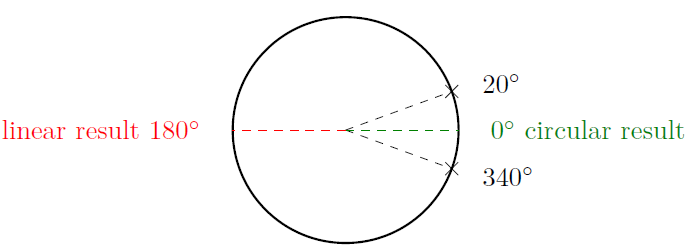

Directional statistics is a subfield of statistics where we consider directional quantities, for example, angles, orientations, phase, etc.
To illustrate the need for a special type of statistics in these scenarios consider the following example. If we want to compute the average of two angles, say 20° and 340°, taking the usual mean yields \(\frac{20^\circ + 340^\circ}{2} = 180^\circ\). However, the correct result is 0°, the circular mean, which is the exact opposite direction!

Circular Statistics
The most fundamental domain in directional statistics is the unit circle. It is of interest when considering periodic quantities such as angles or phase.
Popular probability distributions on the unit circle include the von Mises distribution \(c \cdot \exp(\kappa \cos(x-\mu))\) and the wrapped normal distribution \(\sum_{k=-\infty}^\infty \mathcal{N}(x + 2 k \pi; \mu, \sigma)\). I have investigated some of their properties in (Kurz & Hanebeck, 2015) and (Kurz et al., 2014).
Circular Estimation
I am interested in developing recursive filters for estimation of circular quantities, similar to the well-known Kalman filter as well as its nonlinear extensions such as the unscented Kalman filter (UKF).
- Nonlinear prediction (Kurz et al., 2013)
- Nonlinear measurement update (Kurz et al., 2014), (Gilitschenski et al., 2015)
- Generalization to non-additive noise (Kurz et al., 2016)
- Fourier-based approach (Pfaff et al., 2015), (Pfaff et al., 2016)
- Discrete approach (Kurz et al., 2016)
Deterministic Sampling
An important tool for nonlinear filtering is deterministic sampling. The idea is to choose a number of samples that are representative of a continuous probability density. Working with a set of samples is usually much easier than working with a continuous density. In contrast to stochastic sampling, usually a much smaller number of samples is sufficient.
I have published the following deterministic sampling approaches on the unit circle.
- Based on first trigonometric moment (Kurz et al., 2013)
- Based on second trigonometric moment (Kurz et al., 2014), (Kurz et al., 2016)
- Based on a binary tree (Kurz et al., 2016)
- Based on quantization (Gilitschenski et al., 2016)
Applications
Circular statistics has many applications in fields ranging from signal processing to robotics, from geology to medicine, and from neuroscience to computational biology.
During my work on circular statistics, I have published results about application of the developed techniques in the following circumstances.
- Sensor scheduling for bearings-only measurements (Gilitschenski et al., 2013)
- Constrained object tracking (Kurz et al., 2013)
- Model-predictive control on the unit circle (Kurz et al., 2015)
- Heart phase estimation (Kurz & Hanebeck, 2015)
- Optical Belt Sorting (Pfaff et al., 2017)
Spherical Statistics
Spherical statistics considers quantities on the unit sphere rather than the unit circle. More generally, the unit hypersphere, i.e., the sphere in \(n\) dimensions, can be considered.
Bingham Distribution
The Bingham distribution is given by \(c \cdot \exp(\underline{x}^T \mathbf{M} \mathbf{Z} \mathbf{M}^T \underline{x})\), where \(\underline{x}\) is located on the unit hypersphere, \(\mathbf{M}\) is an orthogonal matrix, and \(\mathbf{Z}\) is a diagonal matrix. This distribution is antipodally symmetric, that is, \(x\) and \(-x\) always have the same probability. Thus, it can be conveniently applied to quaternions, which can be used to represent rotations in the three-dimensional space \(\mathbb{R}^3\).
The following publications contain my work on the Bingham distribution.
- Recursive filter for the 2D case (Kurz et al., 2013)
- Recursive filter for the 4D case (for quaternions) (Kurz et al., 2014)
- Normalization constant (Gilitschenski et al., 2014)
- Deterministic sampling (Gilitschenski et al., 2016)
von Mises-Fisher Distribution
Another distribution on the unit sphere is the von Mises-Fisher distribution, a generalization of the von Mises distribution on the unit circle. It is given by \(c \cdot \exp(\kappa \underline{\mu}^T \underline{x})\), where \(\kappa > 0\) and \(\underline{\mu}\) as well as \(\underline{x}\) are unit vectors.
I have published these results on the von Mises-Fisher distribution.
- Stochastic sampling (Kurz & Hanebeck, 2015)
- Deterministic sampling and nonlinear filtering (Kurz et al., 2016)
- Parameter estimation (Kurz et al., 2016)
Spherical Harmonics
Similar to approximations based on Fourier series on the unit circle, it is possible to approximate probability densities on the unit sphere using so-called spherical harmonics. This way, arbitrary multimodal spherical distributions can be considered.
- Recursive spherical filter based on spherical harmonics (Pfaff et al., 2017)
Toroidal Statistics
While estimation of a single angle is possible with circular statistics, estimating multiple angles at the same time requires toroidal statistics. The key questions is how correlations between these angles can be modeled appropriately. For this purpose, circular-circular correlation coefficients can be used.
In my work, I have investigated the bivariate wrapped normal distribution, a generalization of the wrapped normal distribution on the unit circle to higher dimensions, as well as the bivariate von Mises distribution.
- Recursive filtering using the bivariate wrapped normal distribution (Kurz et al., 2014), (Kurz et al., 2017)
- Parameter estimation for the bivariate wrapped normal distribution (Kurz & Hanebeck, 2015)
- Fusion using the bivariate von Mises distribution (with matrix parameter) (Kurz & Hanebeck, 2015)
- Deterministic sampling on the torus (Kurz & Hanebeck, 2017)
- Fourier-based hypertoroidal filtering (Pfaff et al., 2016)
Circuar-linear Statistics
Whereas toroidal statistics considers multiple periodic quantities, circular-linear statistics deals with combinations of periodic and nonperiodic quantities, for example orientation and position. Here, the key questions is how to model the correlation between circular and linear quantities. Among the most important applications of circular-linear statistics are problems on SE(2) and SE(3), the groups of rigid body motions in 2D and 3D, respectively.
- Partially wrapped normal distribution (Kurz et al., 2014)
- SE(2) Bingham (Gilitschenski et al., 2014), (missing reference), (Li et al., 2018)
- SE(2) using discretization of circle (Kurz et al., 2018)
References
- Kurz, G., & Hanebeck, U. D. (2015). Trigonometric Moment Matching and Minimization of the Kullback–Leibler Divergence. IEEE Transactions on Aerospace and Electronic Systems, 51(1), 3480–3484. https://doi.org/10.1109/TAES.2015.150406
- Kurz, G., Gilitschenski, I., & Hanebeck, U. D. (2014, October). Efficient Evaluation of the Probability Density Function of a Wrapped Normal Distribution. Proceedings of the IEEE ISIF Workshop on Sensor Data Fusion: Trends, Solutions, Applications (SDF 2014).
- Kurz, G., Gilitschenski, I., & Hanebeck, U. D. (2013, June). Recursive Nonlinear Filtering for Angular Data Based on Circular Distributions. Proceedings of the 2013 American Control Conference (ACC 2013).
- Kurz, G., Gilitschenski, I., & Hanebeck, U. D. (2014, June). Nonlinear Measurement Update for Estimation of Angular Systems Based on Circular Distributions. Proceedings of the 2014 American Control Conference (ACC 2014).
- Gilitschenski, I., Kurz, G., & Hanebeck, U. D. (2015, July). Non-Identity Measurement Models for Orientation Estimation Based on Directional Statistics. Proceedings of the 18th International Conference on Information Fusion (Fusion 2015).
- Kurz, G., Gilitschenski, I., & Hanebeck, U. D. (2016). Recursive Bayesian Filtering in Circular State Spaces. IEEE Aerospace and Electronic Systems Magazine, 31(3), 70–87. https://doi.org/10.1109/MAES.2016.150083
- Pfaff, F., Kurz, G., & Hanebeck, U. D. (2015, July). Multimodal Circular Filtering Using Fourier Series. Proceedings of the 18th International Conference on Information Fusion (Fusion 2015).
- Pfaff, F., Kurz, G., & Hanebeck, U. D. (2016, July). Nonlinear Prediction for Circular Filtering Using Fourier Series. Proceedings of the 19th International Conference on Information Fusion (Fusion 2016).
- Kurz, G., Pfaff, F., & Hanebeck, U. D. (2016, September). Discrete Recursive Bayesian Filtering on Intervals and the Unit Circle. Proceedings of the 2016 IEEE International Conference on Multisensor Fusion and Integration for Intelligent Systems (MFI 2016).
- Kurz, G., Gilitschenski, I., & Hanebeck, U. D. (2014, July). Deterministic Approximation of Circular Densities with Symmetric Dirac Mixtures Based on Two Circular Moments. Proceedings of the 17th International Conference on Information Fusion (Fusion 2014).
- Kurz, G., Gilitschenski, I., Siegwart, R. Y., & Hanebeck, U. D. (2016). Methods for Deterministic Approximation of Circular Densities. Journal of Advances in Information Fusion, 11(2), 138–156.
- Gilitschenski, I., Kurz, G., Hanebeck, U. D., & Siegwart, R. (2016, July). Optimal Quantization of Circular Distributions. Proceedings of the 19th International Conference on Information Fusion (Fusion 2016).
- Gilitschenski, I., Kurz, G., & Hanebeck, U. D. (2013, July). Bearings-Only Sensor Scheduling Using Circular Statistics. Proceedings of the 16th International Conference on Information Fusion (Fusion 2013).
- Kurz, G., Faion, F., & Hanebeck, U. D. (2013, October). Constrained Object Tracking on Compact One-dimensional Manifolds Based on Directional Statistics. Proceedings of the Fourth IEEE GRSS International Conference on Indoor Positioning and Indoor Navigation (IPIN 2013).
- Kurz, G., Dolgov, M., & Hanebeck, U. D. (2015, July). Nonlinear Stochastic Model Predictive Control in the Circular Domain. Proceedings of the 2015 American Control Conference (ACC 2015).
- Kurz, G., & Hanebeck, U. D. (2015, July). Heart Phase Estimation Using Directional Statistics for Robotic Beating Heart Surgery. Proceedings of the 18th International Conference on Information Fusion (Fusion 2015).
- Pfaff, F., Kurz, G., Pieper, C., Maier, G., Noack, B., Kruggel-Emden, H., Gruna, R., Hanebeck, U. D., Wirtz, S., Scherer, V., Laengle, T., & Beyerer, J. (2017, November). Improving Multitarget Tracking Using Orientation Estimates for Sorting Bulk Materials. Proceedings of the 2017 IEEE International Conference on Multisensor Fusion and Integration for Intelligent Systems (MFI 2017).
- Kurz, G., Gilitschenski, I., Julier, S. J., & Hanebeck, U. D. (2013, July). Recursive Estimation of Orientation Based on the Bingham Distribution. Proceedings of the 16th International Conference on Information Fusion (Fusion 2013).
- Kurz, G., Gilitschenski, I., Julier, S., & Hanebeck, U. D. (2014). Recursive Bingham Filter for Directional Estimation Involving 180 Degree Symmetry. Journal of Advances in Information Fusion, 9(2), 90–105. http://confcats_isif.s3.amazonaws.com/web-files/journals/entries/431_2_art_10_2559_1.pdf
- Gilitschenski, I., Kurz, G., Julier, S. J., & Hanebeck, U. D. (2014, September). Efficient Bingham Filtering based on Saddlepoint Approximations. Proceedings of the 2014 IEEE International Conference on Multisensor Fusion and Information Integration (MFI 2014).
- Gilitschenski, I., Kurz, G., Julier, S. J., & Hanebeck, U. D. (2016). Unscented Orientation Estimation Based on the Bingham Distribution. IEEE Transactions on Automatic Control, 61(1), 172–177. https://doi.org/10.1109/TAC.2015.2423831
- Kurz, G., & Hanebeck, U. D. (2015, October). Stochastic Sampling of the Hyperspherical von Mises–Fisher Distribution Without Rejection Methods. Proceedings of the IEEE ISIF Workshop on Sensor Data Fusion: Trends, Solutions, Applications (SDF 2015).
- Kurz, G., Gilitschenski, I., & Hanebeck, U. D. (2016). Unscented von Mises-Fisher Filtering. IEEE Signal Processing Letters, 23(4), 463–467. https://doi.org/10.1109/LSP.2016.2529854
- Kurz, G., Pfaff, F., & Hanebeck, U. D. (2016, July). Kullback-Leibler Divergence and Moment Matching for Hyperspherical Probability Distributions. Proceedings of the 19th International Conference on Information Fusion (Fusion 2016).
- Pfaff, F., Kurz, G., & Hanebeck, U. D. (2017, November). Filtering on the Unit Sphere Using Spherical Harmonics. Proceedings of the 2017 IEEE International Conference on Multisensor Fusion and Integration for Intelligent Systems (MFI 2017).
- Kurz, G., Gilitschenski, I., Dolgov, M., & Hanebeck, U. D. (2014, December). Bivariate Angular Estimation Under Consideration of Dependencies Using Directional Statistics. Proceedings of the 53rd IEEE Conference on Decision and Control (CDC 2014).
- Kurz, G., Pfaff, F., & Hanebeck, U. D. (2017, July). Nonlinear Toroidal Filtering Based on Bivariate Wrapped Normal Distributions. Proceedings of the 20th International Conference on Information Fusion (Fusion 2017).
- Kurz, G., & Hanebeck, U. D. (2015, December). Parameter Estimation for the Bivariate Wrapped Normal Distribution. Proceedings of the 54th IEEE Conference on Decision and Control (CDC 2015).
- Kurz, G., & Hanebeck, U. D. (2015, September). Toroidal Information Fusion Based on the Bivariate von Mises Distribution. Proceedings of the 2015 IEEE International Conference on Multisensor Fusion and Integration for Intelligent Systems (MFI 2015).
- Kurz, G., & Hanebeck, U. D. (2017). Deterministic Sampling on the Torus for Bivariate Circular Estimation. IEEE Transactions on Aerospace and Electronic Systems, 53(1), 530–534. https://doi.org/10.1109/TAES.2017.2650079
- Pfaff, F., Kurz, G., & Hanebeck, U. D. (2016). Multivariate Angular Filtering Using Fourier Series. Journal of Advances in Information Fusion, 11(2), 206–226.
- Kurz, G., Gilitschenski, I., & Hanebeck, U. D. (2014, September). The Partially Wrapped Normal Distribution for SE(2) Estimation. Proceedings of the 2014 IEEE International Conference on Multisensor Fusion and Information Integration (MFI 2014).
- Gilitschenski, I., Kurz, G., Julier, S. J., & Hanebeck, U. D. (2014, July). A New Probability Distribution for Simultaneous Representation of Uncertain Position and Orientation. Proceedings of the 17th International Conference on Information Fusion (Fusion 2014).
- Li, K., Kurz, G., Bernreiter, L., & Hanebeck, U. D. (2018, July). Nonlinear Progressive Filtering for SE(2) Estimation. Proceedings of the 21st International Conference on Information Fusion (Fusion 2018).
- Kurz, G., Pfaff, F., & Hanebeck, U. D. (2018). Application of Discrete Recursive Bayesian Estimation on Intervals and the Unit Circle to Filtering on SE(2). IEEE Transactions on Industrial Informatics, 14(3), 1197–1206. https://doi.org/10.1109/TII.2017.2757011